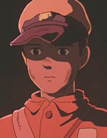
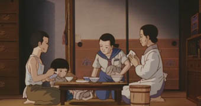
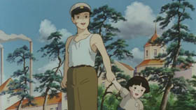

Hotaru no Haka
1988 · Película · 88 minutos
Dirección: Isao Takahata
Música: Michio Mamiya Producción: Tohru Hara
Guión: Isao Takakata, sobre novela autobiográfica de Akiyuki Nosaka
La tumba de las luciérnagas es la primera película de Takahata en Ghibli. Y por lejos la más renombrada. Con su tono realista y trágico, es muy apreciada por los críticos y por el público joven. La historia de dos niños hermanos que quedan huérfanos a fines de la segunda guerra mundial, y libran su propia batalla por la subsistencia.
Sinopsis: Los protagonistas son Seita, niño de trece años, y su hermana Setsuko, de cinco. Año 1945, la zona portuaria de Kobe. El padre militar, está guerreando en la Armada japonesa, y la madre es herida en un bombardeo y muere. Setusko intenta hacerse cargo de su hermana, y se instalan en la casa de una tía. Las penurias de la situación terminan agriando la relación, y Seita decide abandonar a su pariente y alojarse con su hermana en un refugio, una cueva a orillas de una laguna. A pesar de algunas alegrías efímeras, la vida es demasiado dura; la niña enferma de desnutrición, Seita intenta de todo -hasta robar- pero no puede evitar el derrumbe; y a poco de enterarse de la rendición de Japón y de la muerte de su padre, la misma Setsuko termina extinguiéndose en sus brazos.

Quien haya acabado de leer lo anterior y no haya visto la película me estará maldiciendo
por revelar el final. Pero la película empieza por el final:
—21 de septiembre de 1945: ese fue el día en que morí.
Es la primera frase, en la voz de Seita. Un modo bastante original de comenzar
una película, más aún una película animada para niños:
un protagonista y relator... muerto. Los cinéfilos recordarán "Sunset Bulevard";
pero acá el relato no es verbal, sino presencial. Será el espíritu de Seita, el Seita
de ultratumba el que irá paseando, acompañando del espíritu de su hermana,
por los lugares de su vida y revisitando su historia; y nosotros con ellos.
Característica de Takahata, a nuestro ver, ( y diferencial respecto de Miyazaki) la visión de conjunto: su películas
resultan siempre bien redondeadas; de hecho, los finales de sus cuatro películas en Ghibli
son admirables.
Aquí el marco viene dado por esa evocación-recorrido de los espíritus, que aparecen
dibujados en un color rojizo distintivo; y es el marco
justo.
Al comienzo de la película asistimos pues a la muerte del hermano varón, indigente, en una estación de trenes. Muere pronunciando el nombre de su hermana. Entre sus ropas sólo encuentran una lata oxidada de caramelos; al tirarla, se abre y de su interior salen unos restos blancos: los restos de Setsuko... Y así resulta evocado el espíritu de la niña, que se reúne con el de su hermano y recupera su querida lata de caramelos (reluciente ahora). Toman el tren y empiezan a recordar...
{kind=link}
Toda la escena del bombardeo es notable. Fiel a la realidad, y lejos a las convenciones de las películas de guerra, las bombas no estallan al caer, sólo son incendiarias. Así, el efecto de ese silencio ominoso y esa calma es mayor. La cámara se detiene morosamente -toques Ghibli- en las cosas, pintadas con un detallismo entrañable: una escalera apoyada en la pared, un balde con agua.
Seita asiste a la madre completamente vendada e inconciente (uno de los momentos más duros) y trata de ocultar las cosas a su hermana. Ambos sienten oscuramente que sus días felices han terminado.
Es una de mis escenas preferidas: los hermanos han quedado solos en el arenal, la niña se agacha angustiada y empieza a llorar en silencio; el hermano se sienta aparte, tratando de conservar la calma, y luego empieza a hacer acrobacias. Los distintos planos de cámara, las sombras alargadas en el atardecer monocromático, y el ataque musical, hacen del conjunto una pequeña joya.
{kind=link}
La hospitalidad de la tía se apaga rápido. Es visible que alimenta mucho mejor a su hija y a su pensionista que a los huérfanos, y su trato empeora. Empuja a Seita a vender la ropa de su madre, le reprocha su holgazanería (cuando todo el mundo está trabajando por la patria), se queja cuando Setsuko llora y hasta les recuerda la existencia de otros parientes en Tokio... Harto del maltrato y herido en su orgullo, Seita decide al fin abandonarla.
Muchos tienen a la tía por la mala de la película; pero yo no lo veo
así (y tampoco Takahata, a juzgar por algunos comentarios).
Aquí no se trata del melodrama de los pobres huérfanos
buenos que sufren bajo la crueldad de los mayores insensibles.

Es la guerra, tiempo difícil para todos. También la tía tiene sus problemas,
también ella debe comer
los restos de comida pegada al fondo de la olla...; es visible además
que los niños vienen de una familia relativamente acomodada, un militar
de alto rango. Y Seita efectivamente no es un prodigio de generosidad,
ni de laboriosidad ni de buen juicio. La situación le exige una
maduración precoz que está fuera de sus posibilidades o su voluntad. Y, así, se encerrará
en la habitación los días de lluvia a leer mangas, sólo se interesará
en pasear o jugar con su hermana, exhibirá arrestos de independencia
de los que no puede hacerse cargo (ni lavando los platos), cuando
Setsuko tenga hambre la contentará con caramelos... Y sobre todo, tomará la decisión
funesta de cortar con su tía y con la comunidad; y su orgullo le impedirá
reconocer su error y tratar de mendigar el socorro de sus parientes.
Se me dirá que por disculpar a la tía estoy siendo despiadado con el
pobre Seita, un chico de trece años... No es así. Esto es solo una enumeración
de defectos y errores, no un juicio moral. Para juzgar (a la tía o a Seita)
habría que poder medir cuánto podían dar de sí respecto a lo que de hecho dieron;
en semejantes circunstancias, uno no puede atreverse a medirlo.
En este sentido, la película aúna una mirada piadosa y objetiva. Acá no hay buenos ni malos, no hay dedos acusadores (tampoco contra Japón o EEUU, digámoslo de paso). Las cosas son así, simplemente —y trágicamente. Puede buscarse sí -aparte del efecto catártico- un sentido educativo, pero debe pasar por otro lado.
Está el tema de la guerra, claro; y la fragilidad de la felicidad humana, lo precario y precioso de todo bien terrestre y todo lazo humano. A estos motivos edificantes podrían agregarse otros menos comunes y más discutibles. Que desligarse de la comunidad humana no lleva a la libertad sino a la muerte, por ejemplo. Y más aun: pareciera que el camino de Seita está jalonado de rupturas con usos y tradiciones: cuando los hermanos comen solos, ella se arrodilla como una niña formal y reprocha a Seita malos modos: él se ríe y le resta importancia; cuando ella descubre preocupada que no trajo el cepillo de dientes, lo mismo: "una noche sin lavarse los dientes, no es nada" (él sabe, sin embargo, que no será una sola noche). No estoy seguro de que haya que ver estos rasgos como malos, como signo de una especie de desidia y debilidad que desembocará en el hurto y el desastre; pero no me parecen casuales.
Decíamos que Takahata tiene la virtud de saber redondear sus películas. Toda la secuencia final es magnífica. El retorno de la paz contrasta con la desolación de Seita, las jóvenes acomodadas que ponen el tocadiscos, la música occidental ("There's no place like home") como fondo, mientras la imagen de Setsuko juega frente a la cueva... y sobre todo los últimos segundos, tras la última frase, con esa gradación de expresiones y ese movimiento de cámara... Una pequeña maravilla.
{kind=link}
¿Cuál es el público indicado? Comentamos que en Japón se estrenó en función doble para niños,
con Totoro. Nos cuesta entenderlo o aprobarlo. Parece una obra demasiado trágica
para niños. Yo vacilaría en mostrársela a un menor de doce o diez años; pero posiblemente
 me equivoque. Suele gustar a los adolescentes, en cambio. Y es de las obras de Ghibli más
aplaudidas por los críticos.
me equivoque. Suele gustar a los adolescentes, en cambio. Y es de las obras de Ghibli más
aplaudidas por los críticos.
A mí me gusta, si bien algo menos que al promedio, no alcanza a llenarme de la emoción que
-supongo- debería llenarme. Aunque me costaría señalar objeciones o
defectos. Quizás los protagonistas no me resulten enteramente convincentes, en la animación
gestual sobre todo (si lo comparo por ejemplo con su contemporánea Totoro). De todas maneras,
es una película notable, tremendamente original, con momentos bellísimos y
que ocupa un lugar muy importante en Ghibli y en el animé.
Disponibilidad: Fansubs, mayormente... Existe un doblaje al español (de España), de bastante buena calidad. Hay una edición en DVD española de Jonu Media, pero no la he visto por acá.

La dirección de animación y diseño de personajes corrió a cargo del talentoso Yoshifumi Kondo,
el que luego dirigirá "Whisper of the heart".
Se cuenta que Takahata debió disputar ferozmente
su participación con Miyazaki, quien estaba haciendo "Totoro"; ambos directores
acosaban al presidente Suzuki (quien había impulsado la realización simultánea
de las dos películas), asegurando que si no les cedía a "Kon" no podrían terminar.
La disputa la perdió Miyazaki, quizás por su misma habilidad de dibujante
y por haber avanzado en la primeras etapas mucho más rápido que Takahata.
El guión está basado en un libro de Akiyuki Nosaka, que ganó fama gracias a la película. Es una novela parcialmente autobiográfica. El autor, cuya hermana murió en circunstancias similares, comentaba en un reportaje:
Hay muchas cosas que no pude resolverme a escribir. En la historia, el hermano mayor se va volviendo cada vez mejor persona... fue una forma de tratar de compensar todo lo que en la realidad no pude hacer. En ese entonces, siempre me proponía en mi cabeza hacer actos de generosidad, pero no podía. Siempre pensaba "no voy a comer para darle alimento a mi hermanita", pero cuando finalmente tenía la comida en la mano... estaba hambriento y comía. No hay delicia comparable a la de comer, en esos momentos. Y el dolor que venía después, era igual de enorme. No creo que existiera una persona más desesperada que yo...
En 2005, en conmemoración de los 60 años del fin de la guerra, se realizó en Japón otra versión, una película para TV con actores. En ella se otorga mucho más protagonismo a la tía de los niños.